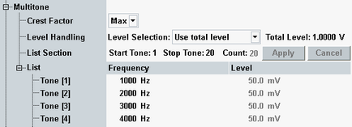
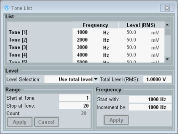

The following settings are specific for multitone signals.

Configures the crest factor of the generated multitone signal.
"Max" | All test tones of the multitone signal are generated with an initial phase of zero degrees, resulting in the maximum crest factor. |
"Low" | The individual test tones are generated with different initial phases, resulting in a low crest factor. |
You can either specify the total signal level or an individual level for each tone.
- Total level:
Select "Use total level" and specify the "Total Level" (effective voltage or full-scale value).
As a result all tones have the same level, displayed for information in the list. The sum of all individual levels equals the total level. - Individual levels:
Select "Use separate levels" and specify the level of each tone in the list (effective voltage or full-scale value).
The resulting "Total Level" is displayed for information.
Specifies the start and stop index of the tone list and thus also the number of tones in the list "Count".
To apply changes, press the "Apply" button. When the dialog is closed, changes are applied automatically.
Remote command:The first column specifies the frequency of each tone. The second column displays or specifies the level of each tone, depending on the configured "Level Handling".
All entries must have different frequencies.
Remote command:If the signal type is set to "Multitone", the generator hotkey "Tone List" is available.
The hotkey opens the following dialog box:

The dialog box provides the list settings described above (see "List", "Level Handling" and "List Section").
The box also allows you to fill the "Frequency" column of the tone list by selecting a start frequency and an increment.